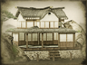

Basic Unit Statistics (can be modified by difficulty level, arts, skills, traits and retainers)
| Recruitment Cost | 1080 | |
| Upkeep Cost | 160 | |
| Melee Attack | 9 | 25% |
| Charge Bonus | 10 | 20% |
| Bonus vs Cavalry | 0 | 0% |
| Range | 150 | 23% |
| Accuracy | 80 | 80% |
| Reloading Skill | 60 | 60% |
| Ammunition | 25 | 31% |
| Melee Defence | 2 | 5% |
| Armour | 6 | 40% |
| Morale | 20 | 40% |
Strengths & Weaknesses
- Fast and can fire on the move.
- High accuracy and range.
- Weak against massed foot missile units.
- Average in melee.
- Very good morale.
Abilities
- Swooping Crane - This unit can arrange itself into a moving circular formation, harrassing the enemy with a constant rate of fire.
- Second Wind - This restores a portion of nearby units' stamina, allowing them to fight longer and harder.
Requires
- Buildings: 
Description
Skill with the bow may become outmoded, but courage lives forever!
Samurai heroes are, in short, a paragon of the samurai martial virtues and skills, figures almost from legend. They carry bows and katana swords, and have long years of practice in their use. They are horsemen almost without equal. Those years of training mean that they can fire rapidly on enemies, accurately peppering them with arrows at surprisingly long range, then close with their foes to give bravura demonstrations of swordsmanship. As might be expected, heroes have very good morale, and can be relied on to fight in almost all circumstances. They are, however, only mortal when facing rifle bullets and artillery shells, and it is a foolish general who sends them into a headlong attack against spear-armed infantry. At their best, samurai were the embodiment of all the heroic, warrior virtues: skilled, brave, and honourable. The code of bushido defined exactly how they were to serve their masters whether by living well or dying well. Life and death were irrelevant in the performance of duty, but this was not simple fatalism or brutality; it meant that attempting to do the right thing and dying in the process was not failure. Upholding honour was expected, and opponents with honour were respected too. The traditions of bushido, honour and duty, could inspire samurai to acts of insane bravery against all odds. The demands of modern warfare, on the other hand, eventually had a terrible, corrosive effect on bushido, emphasising obedience and duty at the expense of honour and doing the right thing.